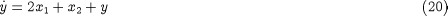
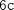
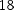
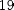
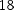
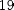
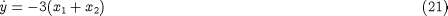
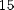
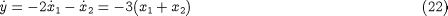

and
and  – i.e. to reduce the system to a set of ODEs.
– i.e. to reduce the system to a set of ODEs.The issue of consistent initialisation of DAE systems is closely related to their classification according to their
index. The index of 1 can be defined as the minimum number of differentiations with respect to time that are necessary to
obtain the time derivatieve of all variables (i.e. both and ) in terms of and – i.e. to reduce the system to a set of ODEs.
We can apply this definition to  : to obtain , we differentiate with respect to time; this yields which, together with
: to obtain , we differentiate with respect to time; this yields which, together with  and , leads to:
and , leads to:

We note that , and form a set of 3 ODEs in , and . Since one differentiation was sufficient to reduce to an ODE system, we conclude that is an index-1 system.
In the case of system , differentiating  with respect to time led to which, combined with and  , yielded . A second differentiation led to  which, when combined with and yields:
, yielded . A second differentiation led to  which, when combined with and yields:

This, together with and , form a set of ODEs in , and . Since two differentiations were needed to reduce to an ODE system, we conclude that is an index-2 system.
Finally, in the case of system , two differentiations with respect to time yielded . To obtain , we need to combine with  and and differentiate the result with respect to time to get:
and and differentiate the result with respect to time to get:

Since three differentiations were necessary, is an index-3 system.
By the definition of index, ODE systems are classified as "index-0". Usually, index-1 systems are very similar to ODEs with respect to the number of initial conditions that can be specified arbitrarily and the behaviour of numberical solution methods.
On the other hand, DAE systems of index 2 or higher are different. We have already seen the fact that their consistent initialisation requires taking into account additional "hidden" relations that can be obtained from the original equations via differentiation – and hence the number of arbitrary initial conditions is reduced accordingly.